Overview
ggrepel provides geoms for ggplot2 to repel overlapping text labels:
Text labels repel away from each other, away from data points, and away from edges of the plotting area (panel).
Let’s compare geom_text() and
geom_text_repel():
library(ggrepel)
set.seed(42)
dat <- subset(mtcars, wt > 2.75 & wt < 3.45)
dat$car <- rownames(dat)
p <- ggplot(dat, aes(wt, mpg, label = car)) +
geom_point(color = "red")
p1 <- p + geom_text() + labs(title = "geom_text()")
p2 <- p + geom_text_repel() + labs(title = "geom_text_repel()")
gridExtra::grid.arrange(p1, p2, ncol = 2)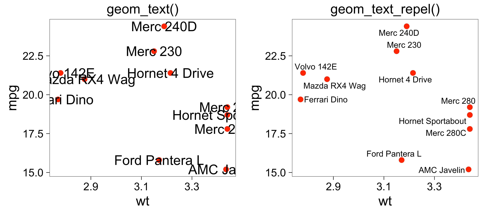
Installation
ggrepel is available on CRAN:
install.packages("ggrepel")The latest development version may have new features, and you can get it from GitHub:
# Use the devtools package
# install.packages("devtools")
devtools::install_github("slowkow/ggrepel")Options
Options allow us to change the behavior of ggrepel to fit the needs
of our figure. Most of them are global options that affect all of the
text labels, but some can be vectors of the same length as your data,
like nudge_x or nudge_y.
| Option | Default | Description |
|---|---|---|
seed |
NA |
random seed for recreating the exact same layout |
force |
1 |
force of repulsion between overlapping text labels |
force_pull |
1 |
force of attraction between each text label and its data point |
direction |
"both" |
move text labels “both” (default), “x”, or “y” directions |
max.time |
0.5 |
maximum number of seconds to try to resolve overlaps |
max.iter |
10000 |
maximum number of iterations to try to resolve overlaps |
max.overlaps |
10 |
discard text labels that overlap too many other text labels or data points |
nudge_x |
0 |
adjust the starting x position of the text label |
nudge_y |
0 |
adjust the starting y position of the text label |
box.padding |
0.25 lines |
padding around the text label |
point.padding |
0 lines |
padding around the labeled data point |
arrow |
NULL |
render line segment as an arrow with grid::arrow()
|
min.segment.length |
0.5 |
only draw line segments that are longer than 0.5 (default) |
Aesthetics
Aesthetics are parameters that can be mapped to your data with
geom_text_repel(mapping = aes(...)).
ggrepel provides the same aesthetics for geom_text_repel
and geom_label_repel that are available in geom_text()
or geom_label(),
but it also provides a few more that are unique to ggrepel.
All of them are listed below. See the ggplot2 documentation about aesthetic specifications for more details and examples.
| Aesthetic | Default | Description |
|---|---|---|
color |
"black" |
text and label border color |
size |
3.88 |
font size |
angle |
0 |
angle of the text label |
alpha |
NA |
transparency of the text label |
family |
"" |
font name |
fontface |
1 |
“plain”, “bold”, “italic”, “bold.italic” |
lineheight |
1.2 |
line height for text labels |
hjust |
0.5 |
horizontal justification |
vjust |
0.5 |
vertical justification |
point.size |
1 |
size of each point for each text label |
segment.linetype |
1 |
line segment solid, dashed, etc. |
segment.color |
"black" |
line segment color |
segment.size |
0.5 mm |
line segment thickness |
segment.alpha |
1.0 |
line segment transparency |
segment.curvature |
0 |
numeric, negative for left-hand and positive for right-hand curves, 0 for straight lines |
segment.angle |
90 |
0-180, less than 90 skews control points toward the start point |
segment.ncp |
1 |
number of control points to make a smoother curve |
segment.shape |
0.5 |
curve shape by control points approximation/interpolation (1 for cubic B-spline, -1 for Catmull-Rom spline) |
segment.square |
TRUE |
TRUE to place control points in city-block fashion,
FALSE for oblique placement |
segment.squareShape |
1 |
shape of the curve relative to additional control points inserted if
square is TRUE
|
segment.inflect |
FALSE |
curve inflection at the midpoint |
segment.debug |
FALSE |
display the curve debug information |
Examples
Hide some of the labels
Set labels to the empty string "" to hide them. All data
points repel the non-empty labels.
set.seed(42)
dat2 <- subset(mtcars, wt > 3 & wt < 4)
# Hide all of the text labels.
dat2$car <- ""
# Let's just label these items.
ix_label <- c(2, 3, 14)
dat2$car[ix_label] <- rownames(dat2)[ix_label]
ggplot(dat2, aes(wt, mpg, label = car)) +
geom_text_repel() +
geom_point(color = ifelse(dat2$car == "", "grey50", "red"))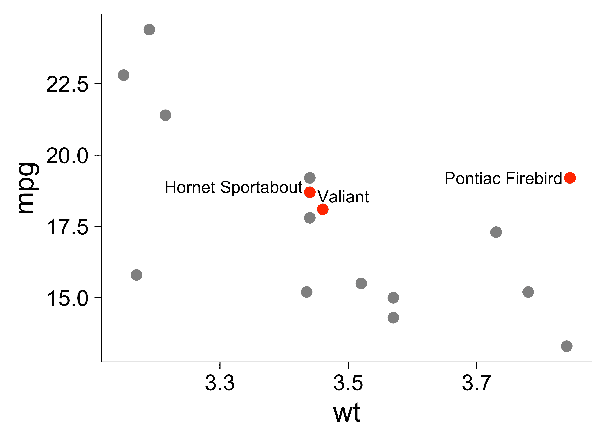
We can quickly repel a few text labels from 10,000 data points in the example below.
We use max.overlaps = Inf to ensure that no text labels
are discarded, even if a text label overlaps lots of other things
(e.g. other text labels or other data points).
set.seed(42)
dat3 <- rbind(
data.frame(
wt = rnorm(n = 10000, mean = 3),
mpg = rnorm(n = 10000, mean = 19),
car = ""
),
dat2[,c("wt", "mpg", "car")]
)
ggplot(dat3, aes(wt, mpg, label = car)) +
geom_point(data = dat3[dat3$car == "",], color = "grey50") +
geom_text_repel(box.padding = 0.5, max.overlaps = Inf) +
geom_point(data = dat3[dat3$car != "",], color = "red")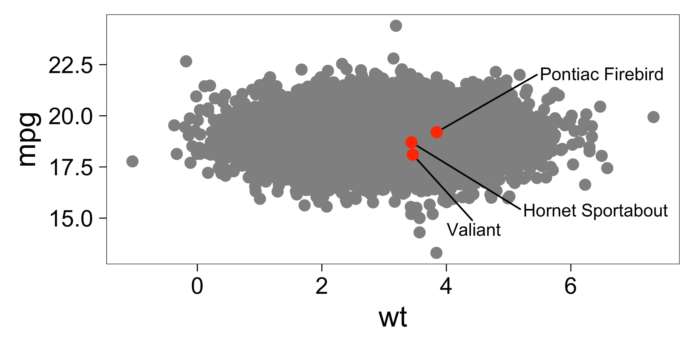
Always show all labels, even when they have too many overlaps
Some text labels will be discarded if they overlap too many other things (default limit is 10). So, if a text label overlaps 10 other text labels or data points, then it will be discarded.
We can expect to see a warning if some data points could not be labeled due to too many overlaps.
Set max.overlaps = Inf to override this behavior and
always show all labels, regardless of whether or not a text label
overlaps too many other things.
Use options(ggrepel.max.overlaps = Inf) to set this
globally for your entire session. The global option can be overridden by
providing the max.overlaps argument to
geom_text_repel().
set.seed(42)
n <- 15
dat4 <- data.frame(
x = rep(1, length.out = n),
y = rep(1, length.out = n),
label = letters[1:n]
)
# Set it globally:
options(ggrepel.max.overlaps = Inf)
p1 <- ggplot(dat4, aes(x, y, label = label)) +
geom_point() +
geom_label_repel(box.padding = 0.5, max.overlaps = 10) +
labs(title = "max.overlaps = 10 (default)")
p2 <- ggplot(dat4, aes(x, y, label = label)) +
geom_point() +
geom_label_repel(box.padding = 0.5) +
labs(title = "max.overlaps = Inf")
gridExtra::grid.arrange(p1, p2, ncol = 2)## Warning: ggrepel: 15 unlabeled data points (too many overlaps). Consider
## increasing max.overlaps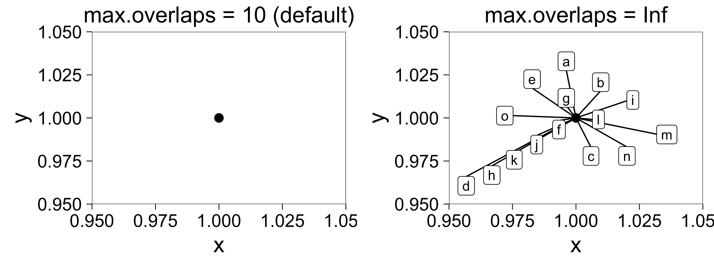
Do not repel labels from data points
Set point.size = NA to prevent label repulsion away from
data points.
Labels will still move away from each other and away from the edges of the plot.
set.seed(42)
ggplot(dat, aes(wt, mpg, label = car)) +
geom_point(color = "red") +
geom_text_repel(point.size = NA)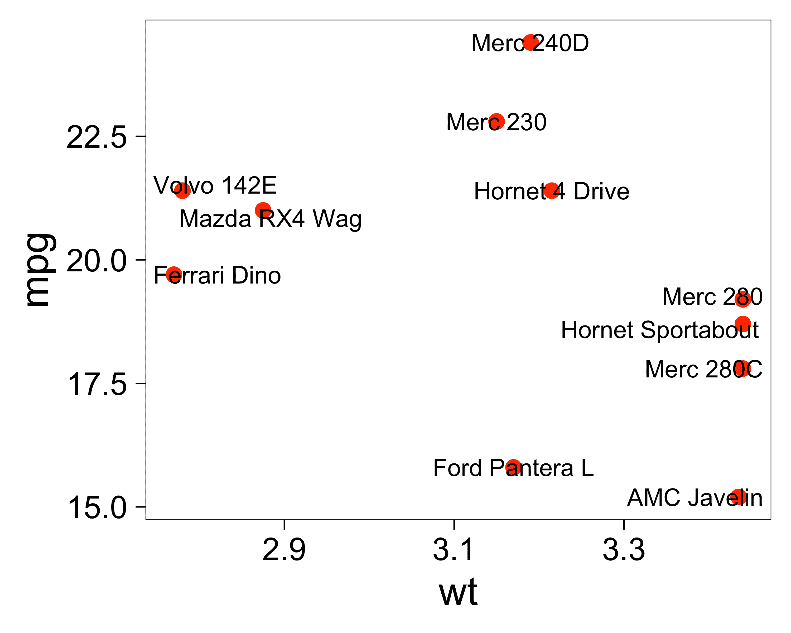
Do not repel labels from plot (panel) edges
Set xlim or ylim to Inf or
-Inf to disable repulsion away from the edges of the panel.
Use NA to indicate the edge of the panel.
set.seed(42)
ggplot(dat, aes(wt, mpg, label = car)) +
geom_point(color = "red") +
geom_text_repel(
# Repel away from the left edge, not from the right.
xlim = c(NA, Inf),
# Do not repel from top or bottom edges.
ylim = c(-Inf, Inf)
)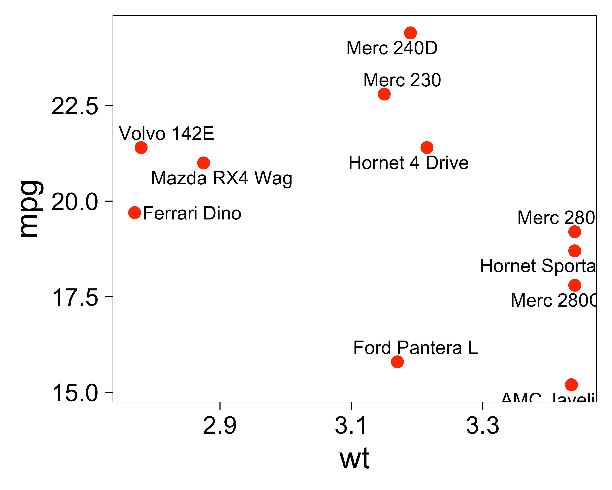
We can also disable clipping to allow the labels to go beyond the edges of the panel.
set.seed(42)
ggplot(dat, aes(wt, mpg, label = car)) +
geom_point(color = "red") +
coord_cartesian(clip = "off") +
geom_label_repel(fill = "white", xlim = c(-Inf, Inf), ylim = c(-Inf, Inf))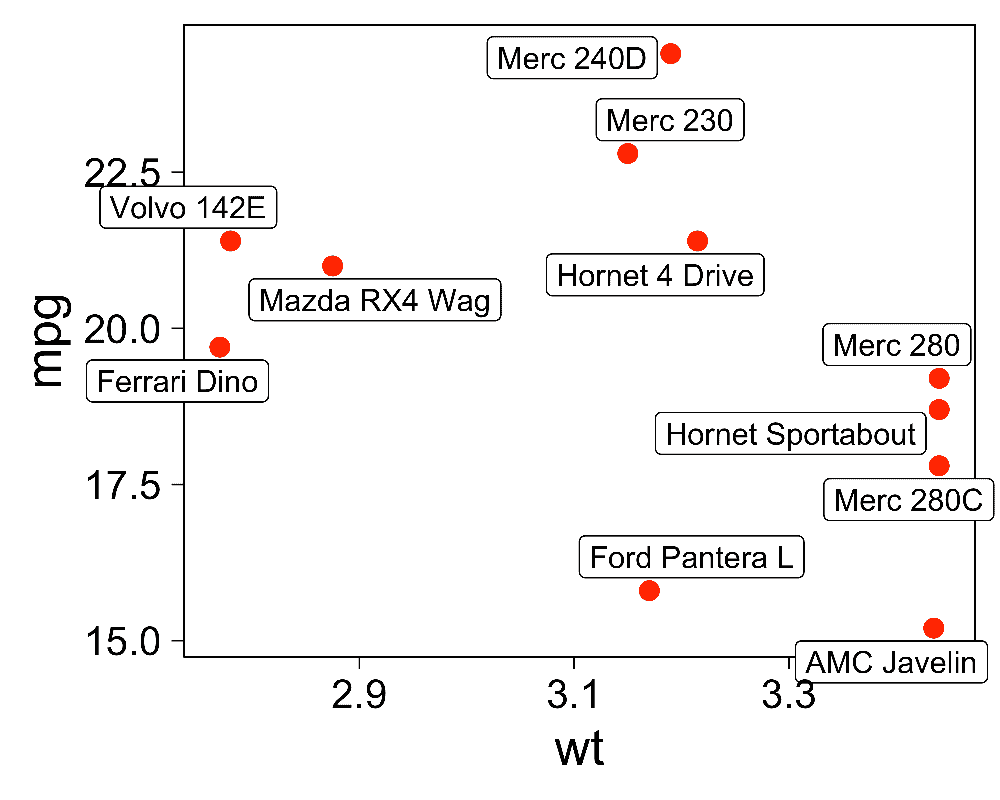
Expand the scale to make room for labels
Since the text labels repel away from the edges of the plot panel, we might want to expand the scale to give them more room to fit.
set.seed(42)
d <- data.frame(
x1 = 1,
y1 = rnorm(10),
x2 = 2,
y2 = rnorm(10),
lab = state.name[1:10]
)
p <- ggplot(d, aes(x1, y1, xend = x2, yend = y2, label = lab, col = lab)) +
geom_segment(size = 1) +
guides(color = "none") +
theme(axis.title.x = element_blank()) +
geom_text_repel(
nudge_x = -0.2, direction = "y", hjust = "right"
) +
geom_text_repel(
aes(x2, y2), nudge_x = 0.1, direction = "y", hjust = "left"
)
p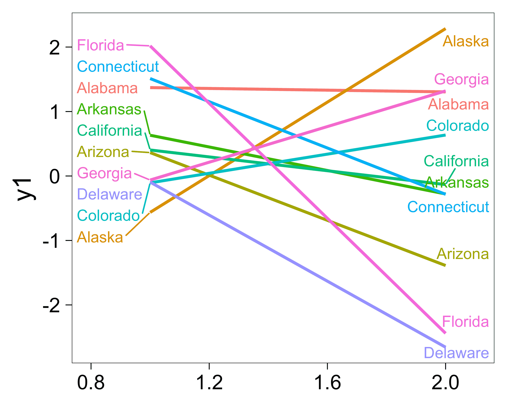
p + scale_x_continuous(
breaks = 1:2, labels = c("Dimension 1", "Dimension 2"),
expand = expansion(mult = 0.5)
)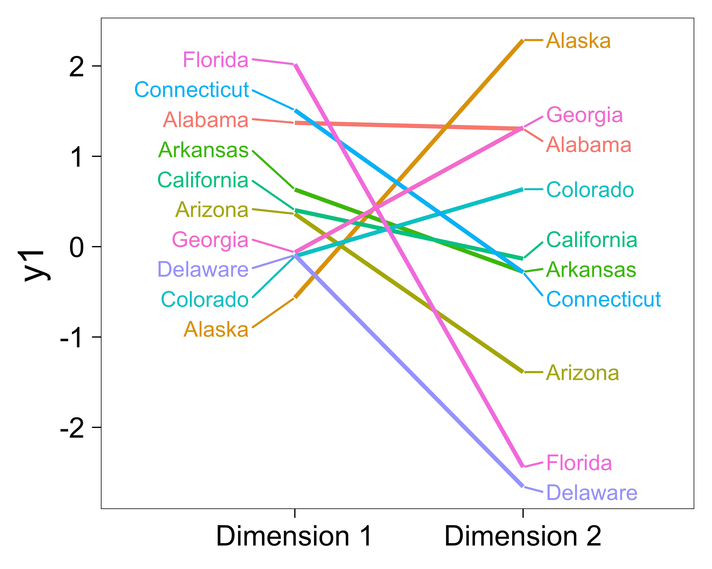
Always (or never) draw line segments
Use min.segment.length = 0 to draw all line segments, no
matter how short they are.
Use min.segment.length = Inf to never draw any line
segments, no matter how long they are.
p <- ggplot(dat, aes(wt, mpg, label = car)) +
geom_point(color = "red")
p1 <- p +
geom_text_repel(min.segment.length = 0, seed = 42, box.padding = 0.5) +
labs(title = "min.segment.length = 0")
p2 <- p +
geom_text_repel(min.segment.length = Inf, seed = 42, box.padding = 0.5) +
labs(title = "min.segment.length = Inf")
gridExtra::grid.arrange(p1, p2, ncol = 2)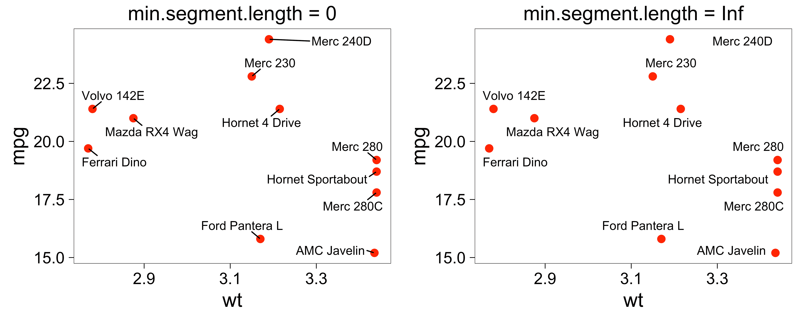
Make curved line segments or arrows
The line segments can be curved as in geom_curve() from
ggplot2.
-
segment.curvature = 1increases right-hand curvature, negative values would increase left-hand curvature, 0 makes straight lines -
segment.ncp = 3gives 3 control points for the curve -
segment.angle = 20skews the curve towards the start, values greater than 90 would skew toward the end
set.seed(42)
ggplot(dat, aes(wt, mpg, label = car)) +
geom_point(color = "red") +
geom_text_repel(
nudge_x = .15,
box.padding = 0.5,
nudge_y = 1,
segment.curvature = -0.1,
segment.ncp = 3,
segment.angle = 20
)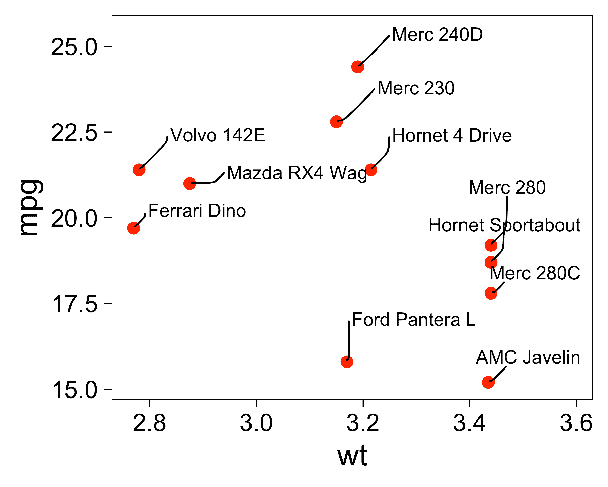
Setting the curvature to a value near zero gives a sharp angle:
set.seed(42)
cars <- c("Volvo 142E", "Merc 230")
ggplot(dat) +
aes(wt, mpg, label = ifelse(car %in% cars, car, "")) +
geom_point(color = "red") +
geom_text_repel(
point.padding = 0.2,
nudge_x = .15,
nudge_y = .5,
segment.curvature = -1e-20,
arrow = arrow(length = unit(0.015, "npc"))
) +
theme(legend.position = "none")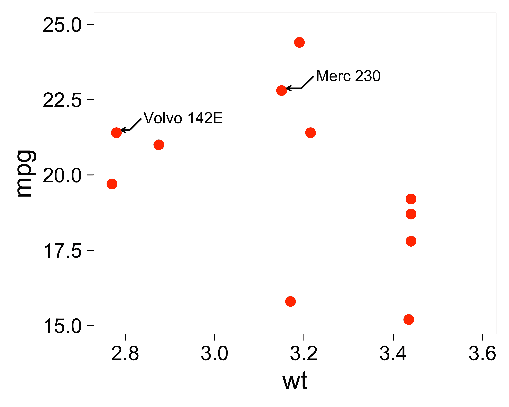
Set segment.squareto FALSE to get oblique
curves, and segment.inflect to TRUE to
introduce an inflection point.
set.seed(42)
cars_subset <- head(mtcars, 5)
cars_subset$car <- rownames(cars_subset)
cars_subset_curves <- cars_subset[rep(seq_len(nrow(cars_subset)), times = 4), ]
cars_subset_curves$square <- rep(c(TRUE, FALSE), each = nrow(cars_subset) * 2)
cars_subset_curves$inflect <- rep(c(TRUE, FALSE, TRUE, FALSE), each = nrow(cars_subset))
ggplot(cars_subset_curves, aes(y = wt, x = 1, label = car)) +
facet_grid(square ~ inflect, labeller = labeller(.default = label_both)) +
geom_point(color = "red") +
ylim(1, 4.5) +
xlim(1, 1.375) +
geom_text_repel(
aes(
segment.square = square,
segment.inflect = inflect,
),
force = 0.5,
nudge_x = 0.15,
direction = "y",
hjust = 0,
segment.size = 0.2,
segment.curvature = -0.1
) +
theme(
axis.line.x = element_blank(),
axis.ticks.x = element_blank(),
axis.text.x = element_blank(),
axis.title.x = element_blank()
)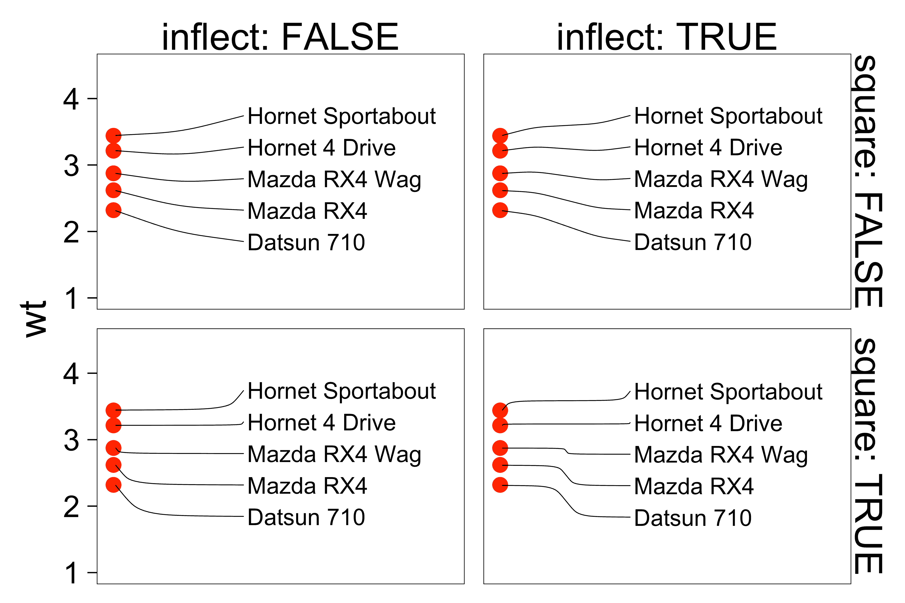
Use segment.shape to adjust the interpolation of the
control points:
set.seed(42)
cars_subset_shapes <- cars_subset[rep(seq_len(nrow(cars_subset)), times = 5), ]
cars_subset_shapes$shape <- rep(c(-1, -0.5, 0, 0.5, 1), each = nrow(cars_subset))
ggplot(cars_subset_shapes, aes(y = wt, x = 1, label = car)) +
facet_wrap('shape', labeller = labeller(.default = label_both), ncol = 1) +
geom_point(color = "red") +
ylim(1, 4.5) +
xlim(1, 1.375) +
geom_text_repel(
aes(
segment.shape = shape
),
force = 0.5,
nudge_x = 0.25,
direction = "y",
hjust = 0,
segment.size = 0.2,
segment.curvature = -0.6,
segment.angle = 45,
segment.ncp = 2,
segment.square = FALSE,
segment.inflect = TRUE
) +
theme(
axis.line.x = element_blank(),
axis.ticks.x = element_blank(),
axis.text.x = element_blank(),
axis.title.x = element_blank()
)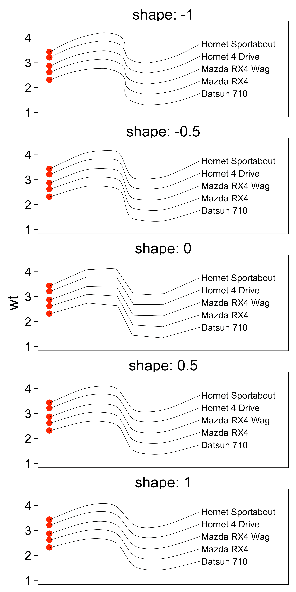
We can use different line types (1, 2, 3, 4, 5, or 6).
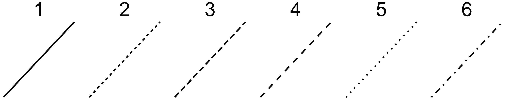
And different types of arrows. See ggplot2::geom_segment() for more details.
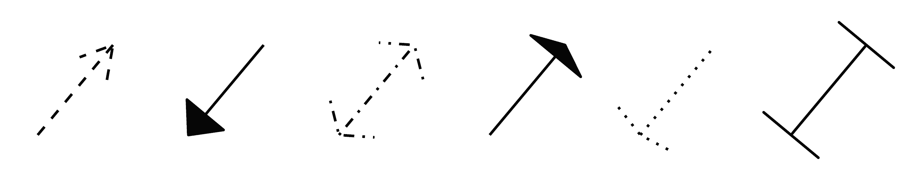
set.seed(42)
cars <- c("Volvo 142E", "Merc 230")
ggplot(dat, aes(wt, mpg, label = ifelse(car %in% cars, car, ""))) +
geom_point(color = "red") +
geom_text_repel(
point.padding = 0.2,
nudge_x = .15,
nudge_y = .5,
segment.linetype = 6,
segment.curvature = -1e-20,
arrow = arrow(length = unit(0.015, "npc"))
)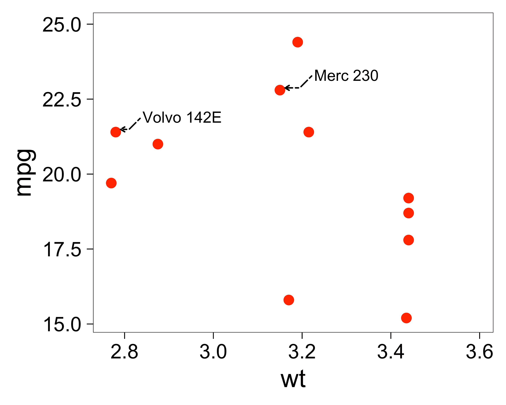
Repel labels from data points with different sizes
We can use the continuous_scale() function from ggplot2. It allows us to specify a single scale that applies to multiple aesthetics.
For ggrepel, we want to apply a single size scale to two aesthetics:
-
size, which tells ggplot2 the size of the points to draw on the plot -
point.size, which tells ggrepel the point size, so it can position the text labels away from them
In the example below, there is a third size in the call
to geom_text_repel() to specify the font size for the text
labels.
my_pal <- function(range = c(1, 6)) {
force(range)
function(x) scales::rescale(x, to = range, from = c(0, 1))
}
ggplot(dat, aes(wt, mpg, label = car)) +
geom_point(aes(size = cyl), alpha = 0.6) + # data point size
continuous_scale(
aesthetics = c("size", "point.size"), scale_name = "size",
palette = my_pal(c(2, 15)),
guide = guide_legend(override.aes = list(label = "")) # hide "a" in legend
) +
geom_text_repel(
aes(point.size = cyl), # data point size
size = 5, # font size in the text labels
point.padding = 0, # additional padding around each point
min.segment.length = 0, # draw all line segments
max.time = 1, max.iter = 1e5, # stop after 1 second, or after 100,000 iterations
box.padding = 0.3 # additional padding around each text label
) +
theme(legend.position = "right")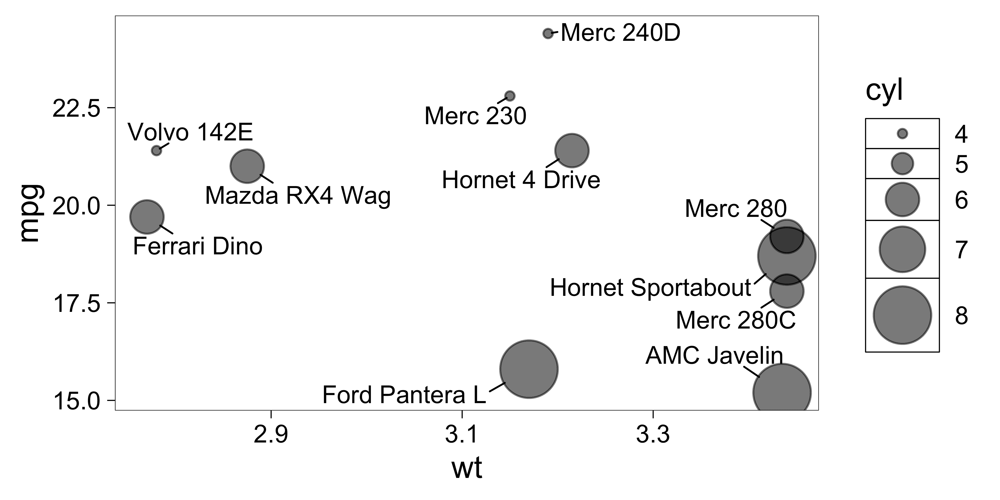
my_pal <- function(range = c(1, 6)) {
force(range)
function(x) scales::rescale(x, to = range, from = c(0, 1))
}
ggplot(dat, aes(wt, mpg, label = car)) +
geom_label_repel(
aes(point.size = cyl), # data point size
size = 5, # font size in the text labels
point.padding = 0, # additional padding around each point
min.segment.length = 0, # draw all line segments
max.time = 1, max.iter = 1e5, # stop after 1 second, or after 100,000 iterations
box.padding = 0.3 # additional padding around each text label
) +
# Put geom_point() after geom_label_repel, so the
# legend for geom_point() appears on the top layer.
geom_point(aes(size = cyl), alpha = 0.6) + # data point size
continuous_scale(
aesthetics = c("size", "point.size"),
scale_name = "size",
palette = my_pal(c(2, 15)),
guide = guide_legend(override.aes = list(label = "")) # hide "a" in legend
) +
theme(legend.position = "right")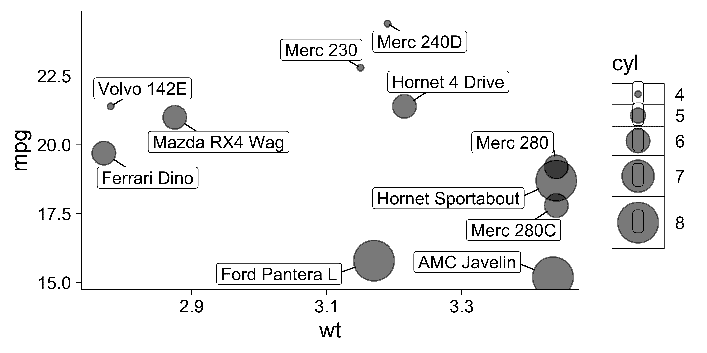
Limit labels to a specific area
Use options xlim and ylim to constrain the
labels to a specific area. Limits are specified in data coordinates. Use
NA when there is no lower or upper bound in a particular
direction.
Here we also use grid::arrow() to render the segments as
arrows.
set.seed(42)
# All labels should be to the right of 3.
x_limits <- c(3, NA)
p <- ggplot(dat) +
aes(
x = wt, y = mpg, label = car,
fill = factor(cyl), segment.color = factor(cyl)
) +
geom_vline(xintercept = x_limits, linetype = 3) +
geom_point() +
geom_label_repel(
color = "white",
arrow = arrow(
length = unit(0.03, "npc"), type = "closed", ends = "first"
),
xlim = x_limits,
point.padding = NA,
box.padding = 0.1
) +
scale_fill_discrete(
name = "cyl",
# The same color scall will apply to both of these aesthetics.
aesthetics = c("fill", "segment.color")
)
p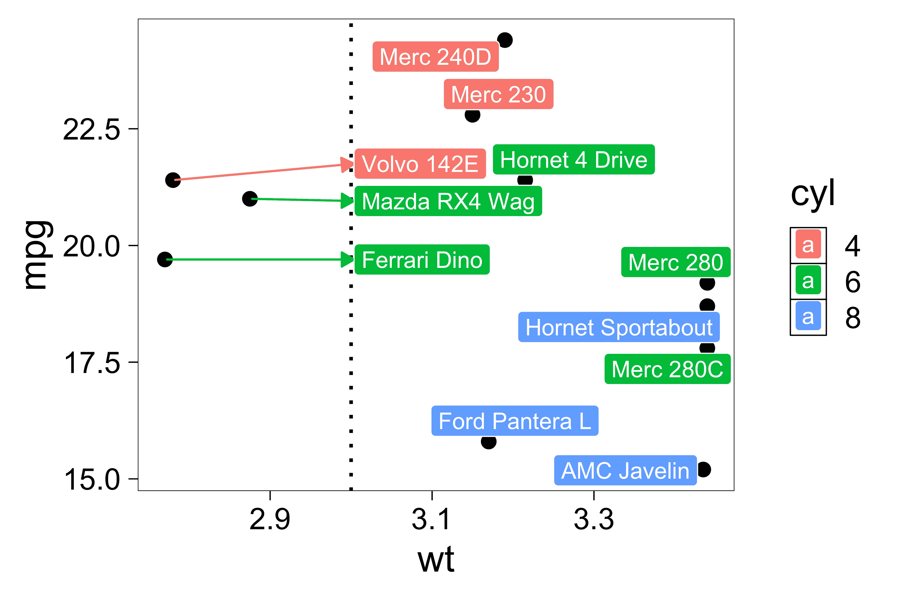
Remove “a” from the legend
Sometimes we want to remove the “a” labels in the legend.
We can do that by overriding the legend aesthetics:
# Don't use "color" in the legend.
p + guides(fill = guide_legend(override.aes = aes(color = NA)))
# Or set the label to the empty string "" (or any other string).
p + guides(fill = guide_legend(override.aes = aes(label = "")))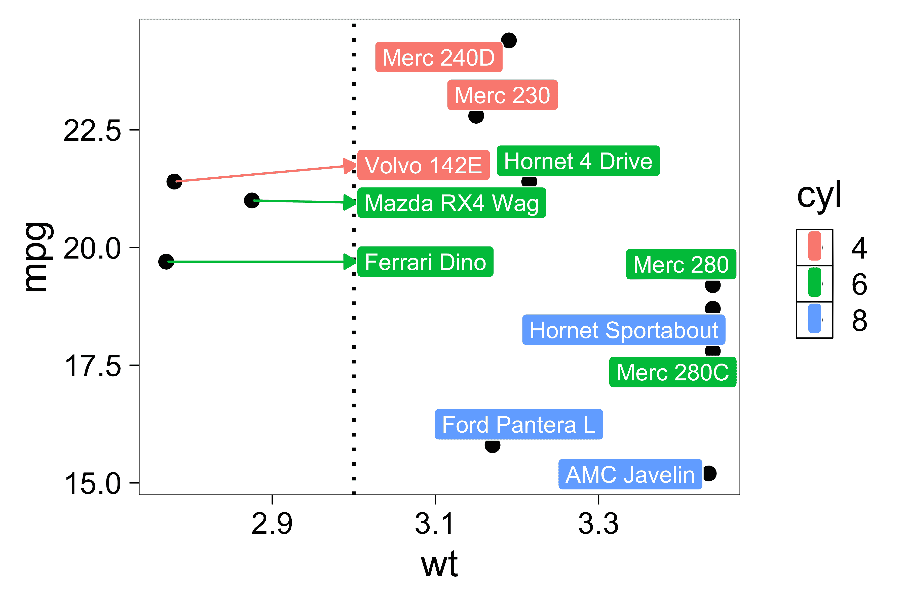
Align labels on the top or bottom edge
Use hjust to justify the text neatly:
-
hjust = 0for left-align -
hjust = 0.5for center -
hjust = 1for right-align
Sometimes the labels do not align perfectly. Try using
direction = "x" to limit label movement to the x-axis (left
and right) or direction = "y" to limit movement to the
y-axis (up and down). The default is
direction = "both".
Also try using xlim() and ylim() to increase the size of the plotting area so all of the labels fit comfortably.
set.seed(42)
ggplot(mtcars, aes(x = wt, y = 1, label = rownames(mtcars))) +
geom_point(color = "red") +
geom_text_repel(
force_pull = 0, # do not pull toward data points
nudge_y = 0.05,
direction = "x",
angle = 90,
hjust = 0,
segment.size = 0.2,
max.iter = 1e4, max.time = 1
) +
xlim(1, 6) +
ylim(1, 0.8) +
theme(
axis.line.y = element_blank(),
axis.ticks.y = element_blank(),
axis.text.y = element_blank(),
axis.title.y = element_blank()
)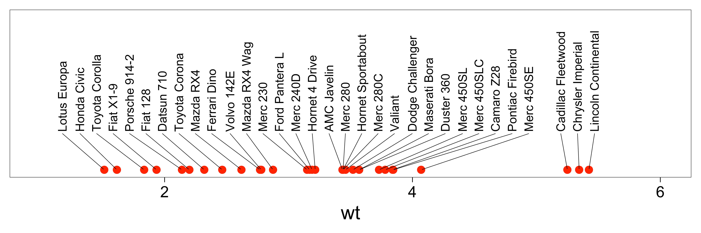
Align text vertically with nudge_y and allow the labels
to move horizontally with direction = "x":
set.seed(42)
dat <- mtcars
dat$car <- rownames(dat)
ggplot(dat, aes(qsec, mpg, label = car)) +
geom_text_repel(
data = subset(dat, mpg > 30),
nudge_y = 36 - subset(dat, mpg > 30)$mpg,
segment.size = 0.2,
segment.color = "grey50",
direction = "x"
) +
geom_point(color = ifelse(dat$mpg > 30, "red", "black")) +
scale_x_continuous(expand = c(0.05, 0.05)) +
scale_y_continuous(limits = c(NA, 36))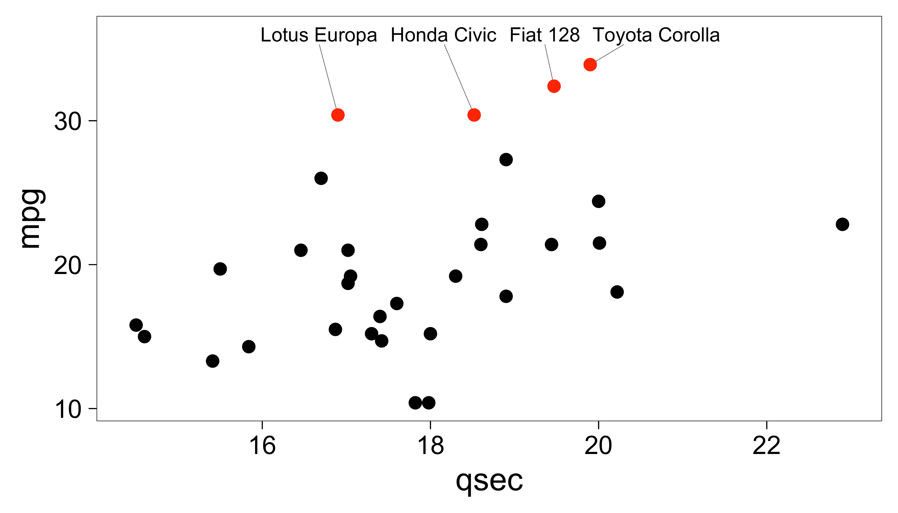
Align labels on the left or right edge
Set direction to “y” and try hjust 0.5, 0,
and 1:
set.seed(42)
p <- ggplot(mtcars, aes(y = wt, x = 1, label = rownames(mtcars))) +
geom_point(color = "red") +
ylim(1, 5.5) +
theme(
axis.line.x = element_blank(),
axis.ticks.x = element_blank(),
axis.text.x = element_blank(),
axis.title.x = element_blank()
)
p1 <- p +
xlim(1, 1.375) +
geom_text_repel(
force = 0.5,
nudge_x = 0.15,
direction = "y",
hjust = 0,
segment.size = 0.2
) +
ggtitle("hjust = 0")
p2 <- p +
xlim(1, 1.375) +
geom_text_repel(
force = 0.5,
nudge_x = 0.2,
direction = "y",
hjust = 0.5,
segment.size = 0.2
) +
ggtitle("hjust = 0.5 (default)")
p3 <- p +
xlim(0.25, 1) +
scale_y_continuous(position = "right") +
geom_text_repel(
force = 0.5,
nudge_x = -0.25,
direction = "y",
hjust = 1,
segment.size = 0.2
) +
ggtitle("hjust = 1")
gridExtra::grid.arrange(p1, p2, p3, ncol = 3)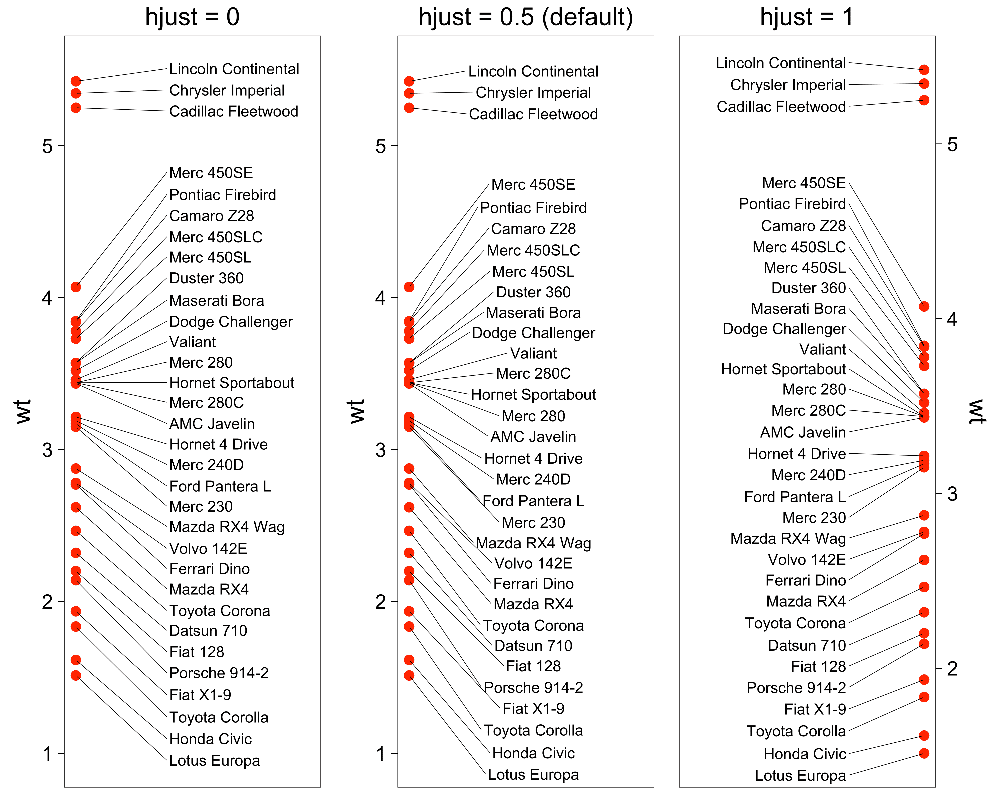
Align text horizontally with nudge_x and
hjust, and allow the labels to move vertically with
direction = "y":
set.seed(42)
dat <- subset(mtcars, wt > 2.75 & wt < 3.45)
dat$car <- rownames(dat)
ggplot(dat, aes(wt, mpg, label = car)) +
geom_text_repel(
data = subset(dat, wt > 3),
nudge_x = 3.5 - subset(dat, wt > 3)$wt,
segment.size = 0.2,
segment.color = "grey50",
direction = "y",
hjust = 0
) +
geom_text_repel(
data = subset(dat, wt < 3),
nudge_x = 2.7 - subset(dat, wt < 3)$wt,
segment.size = 0.2,
segment.color = "grey50",
direction = "y",
hjust = 1
) +
scale_x_continuous(
breaks = c(2.5, 2.75, 3, 3.25, 3.5),
limits = c(2.4, 3.8)
) +
geom_point(color = "red")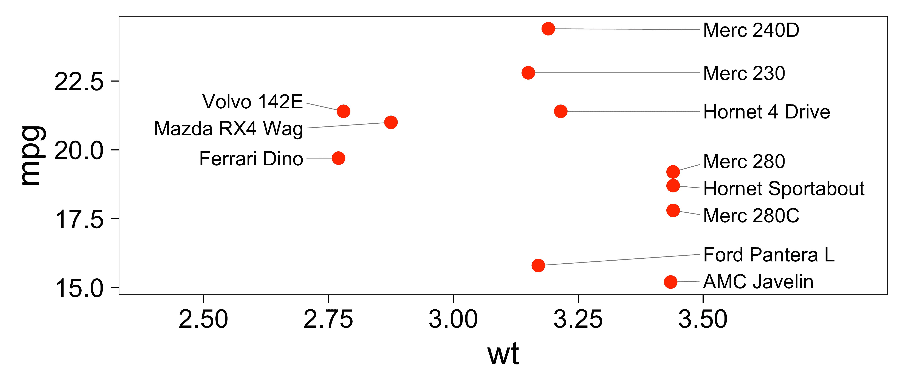
Using ggrepel with stat_summary()
We can use stat_summary() with
geom = "text_repel".
Note: When we use
ggplot2::stat_summary() with ggrepel, we should prefer
position_nudge_repel() instead of
ggplot2::position_nudge().
The position_nudge_repel() function nudges the text
label’s position, but it also remembers the original position of the
data point.
p <- ggplot(mtcars, aes(factor(cyl), mpg)) +
stat_summary(
fill = "gray90",
colour = "black",
fun = "mean",
geom = "col"
)
p1 <- p + stat_summary(
aes(label = round(stat(y))),
fun = "mean",
geom = "text_repel",
min.segment.length = 0, # always draw segments
position = position_nudge(y = -2)
) +
labs(title = "position_nudge()")
p2 <- p + stat_summary(
aes(label = round(stat(y))),
fun = "mean",
geom = "text_repel",
min.segment.length = 0, # always draw segments
position = position_nudge_repel(y = -2)
) +
labs(title = "position_nudge_repel()")
gridExtra::grid.arrange(p1, p2, ncol = 2)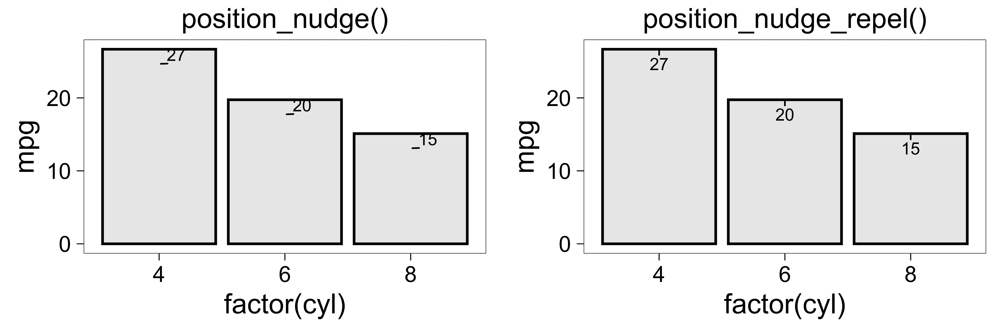
Justify multiple lines of text with hjust
The hjust option should behave mostly the same way it
does with ggplot2::geom_text().
p <- ggplot() +
coord_cartesian(xlim=c(0,1), ylim=c(0,1)) +
theme_void()
labelInfo <- data.frame(
x = c(0.45, 0.55),
y = c(0.5, 0.5),
g = c(
"I'd like very much to be\nright justified.",
"And I'd like to be\nleft justified."
)
)
p + geom_text_repel(
data = labelInfo,
mapping = aes(x, y, label = g),
size = 5,
hjust = c(1, 0),
nudge_x = c(-0.05, 0.05),
arrow = arrow(length = unit(2, "mm"), ends = "last", type = "closed")
)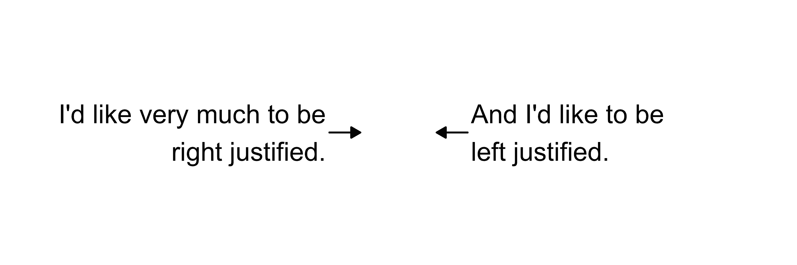
p + geom_label_repel(
data = labelInfo,
mapping = aes(x, y, label = g),
size = 5,
hjust = c(1, 0),
nudge_x = c(-0.05, 0.05),
arrow = arrow(length = unit(2, "mm"), ends = "last", type = "closed")
)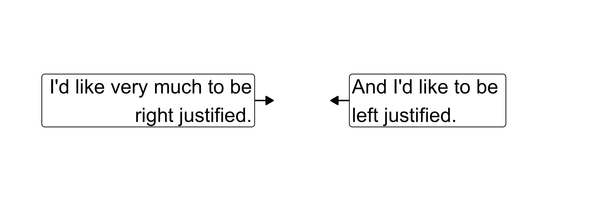
Label jittered points
mtcars$label <- rownames(mtcars)
mtcars$label[mtcars$cyl != 6] <- ""
# Available since ggplot2 2.2.1
pos <- position_jitter(width = 0.3, seed = 2)
ggplot(mtcars, aes(factor(cyl), mpg, color = label != "", label = label)) +
geom_point(position = pos) +
geom_text_repel(position = pos) +
theme(legend.position = "none") +
labs(title = "position_jitter()")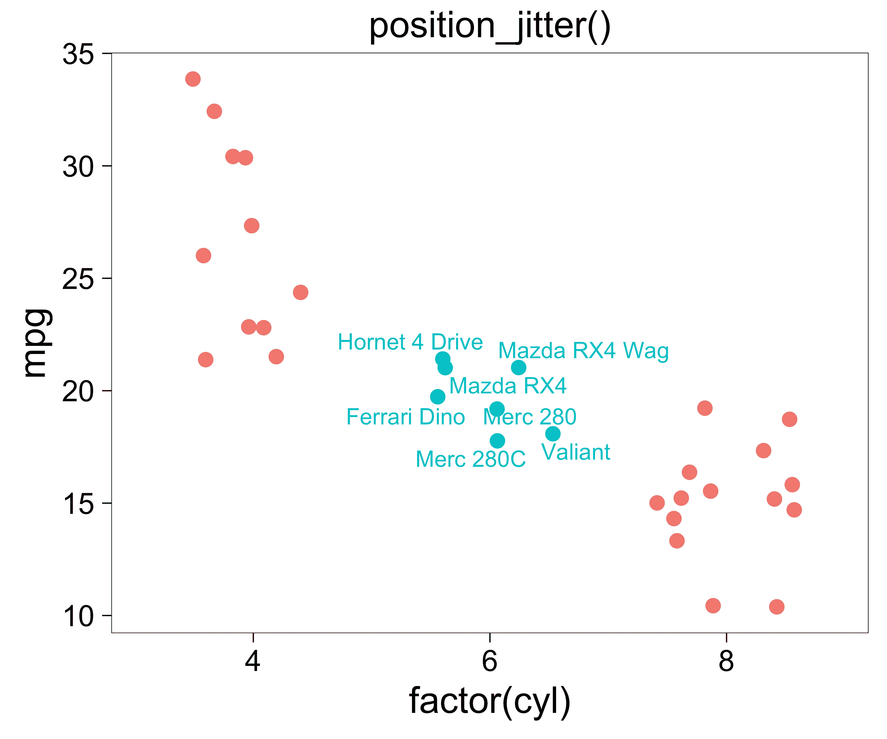
You can also use other position functions, like
position_quasirandom() from the ggbeeswarm package by
Erik Clarke:
mtcars$label <- rownames(mtcars)
mtcars$label[mtcars$cyl != 6] <- ""
library(ggbeeswarm)
pos <- position_quasirandom()
ggplot(mtcars, aes(factor(cyl), mpg, color = label != "", label = label)) +
geom_point(position = pos) +
geom_text_repel(position = pos) +
theme(legend.position = "none") +
labs(title = "position_quasirandom()")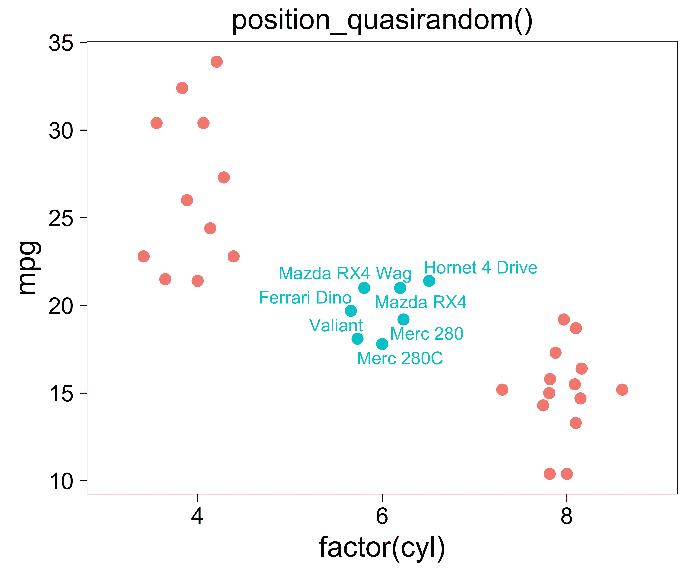
Nudge labels in different directions with ggpp
Pedro Aphalo created a great
extension package for ggplot2 called ggpp that provides
useful functions such as position_nudge_center(), which we
demonstrate below:
library(ggpp)
library(patchwork)
## Example data frame where each species' principal components have been computed.
df <- data.frame(
Species = paste("Species", 1:5),
PC1 = c(-4, -3.5, 1, 2, 3),
PC2 = c(-1, -1, 0, -0.5, 0.7)
)
p <- ggplot(df, aes(x = PC1, y = PC2, label = Species)) +
geom_segment(aes(x = 0, y = 0, xend = PC1, yend = PC2),
arrow = arrow(length = unit(0.1, "inches"))) +
xlim(-5, 5) +
ylim(-2, 2) +
geom_hline(aes(yintercept = 0), linewidth = 0.2) +
geom_vline(aes(xintercept = 0), linewidth = 0.2)
p1 <- p + geom_text_repel()
p2 <- p + geom_text_repel(position = position_nudge_center(0.2, 0.1, 0, 0))
p1 + (p2 + labs(title = "position_nudge_center()"))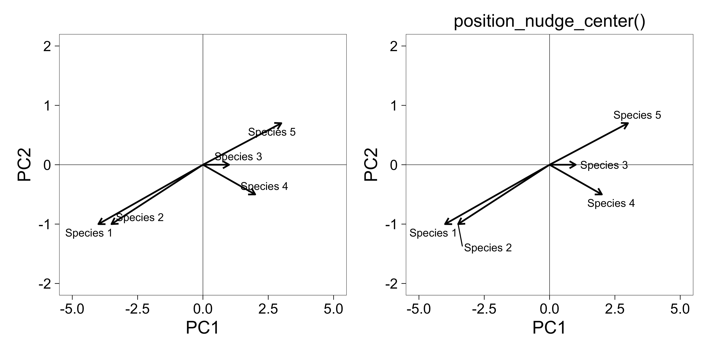
Label sf objects
Currently if you use geom_text_repel() or
geom_label_repel() with a ggplot2::geom_sf
plot, you will probably get an error like
Error: geom_label_repel requires the following missing aesthetics: x and y
There’s a workaround to this which will enable the
ggrepel functions to work with spatial sf
plots like this - you just need to include:
stat = "sf_coordinates"
in the geom_text|label_repel() call.
# thanks to Hiroaki Yutani
# https://github.com/slowkow/ggrepel/issues/111#issuecomment-416853013
library(ggplot2)
library(sf)
nc <- sf::st_read(system.file("shape/nc.shp", package="sf"), quiet = TRUE)
ggplot(nc) +
geom_sf() +
ggrepel::geom_label_repel(
data = head(nc),
aes(label = NAME, geometry = geometry),
stat = "sf_coordinates",
min.segment.length = 0
)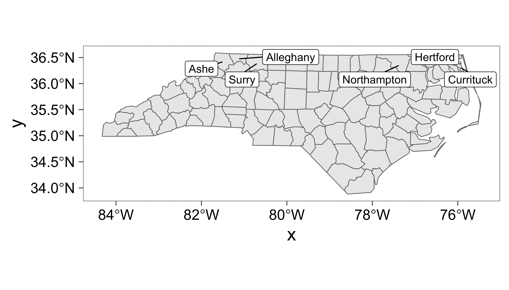
Thanks to Hiroaki Yutani for the solution.
Shadows (or glow) under text labels
We can place shadows (or glow) underneath each text label to enhance the readability of the text. This might be useful when text labels are placed on top of other plot elements. This feature uses the same code as the shadowtext package by Guangchuang Yu.
set.seed(42)
ggplot(dat, aes(wt, mpg, label = car)) +
geom_point(color = "red") +
geom_text_repel(
color = "white", # text color
bg.color = "grey30", # shadow color
bg.r = 0.15 # shadow radius
)
Verbose timing information
Use verbose = TRUE to see:
- how many iterations of the physical simulation were completed
- how much time has elapsed, in seconds
- how many overlaps remain unresolved in the final figure
p <- ggplot(mtcars,
aes(wt, mpg, label = rownames(mtcars), colour = factor(cyl))) +
geom_point()
p + geom_text_repel(
verbose = TRUE,
seed = 123,
max.time = 1,
max.iter = Inf,
size = 3
)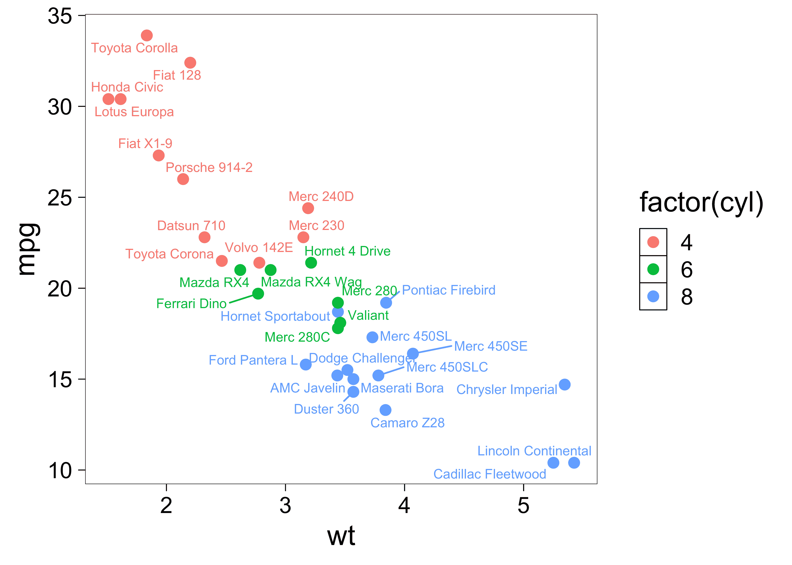
## 1.00s elapsed for 154910 iterations, 2 overlaps. Consider increasing 'max.time'.Word cloud
Note: The ggwordcloud package by Erwan Le Pennec creates much better word clouds than ggrepel.
The force option controls the strength of repulsion.
The force_pull option controls the strength of the
spring that pulls the text label toward its data point.
To make a word cloud, we can assign all of the text labels the same
data point at the origin (0, 0) and set force_pull = 0 to
disable the springs.
set.seed(42)
ggplot(mtcars) +
geom_text_repel(
aes(
label = rownames(mtcars),
size = mpg > 15,
colour = factor(cyl),
x = 0,
y = 0
),
force_pull = 0, # do not pull text toward the point at (0,0)
max.time = 0.5,
max.iter = 1e5,
max.overlaps = Inf,
segment.color = NA,
point.padding = NA
) +
theme_void() +
theme(strip.text = element_text(size = 16)) +
facet_wrap(~ factor(cyl)) +
scale_color_discrete(name = "Cylinders") +
scale_size_manual(values = c(2, 3)) +
theme(
strip.text = element_blank(),
panel.border = element_rect(size = 0.2, fill = NA)
)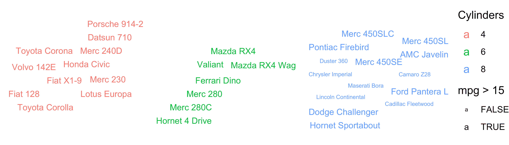
Polar coordinates
set.seed(42)
mtcars$label <- rownames(mtcars)
mtcars$label[mtcars$mpg < 25] <- ""
ggplot(mtcars, aes(x = wt, y = mpg, color = factor(cyl), label = label)) +
coord_polar(theta = "x") +
geom_point(size = 2) +
scale_color_discrete(name = "cyl") +
geom_text_repel(show.legend = FALSE) + # Don't display "a" in the legend.
theme_bw(base_size = 18)
Modified coordinates
ggrepel works with modified x and y coordinates:
p <- ggplot(mtcars, aes(wt, mpg, label = rownames(mtcars))) +
geom_text_repel() +
geom_point(color = 'red')
# Swap the x and y coordinates
p + coord_flip()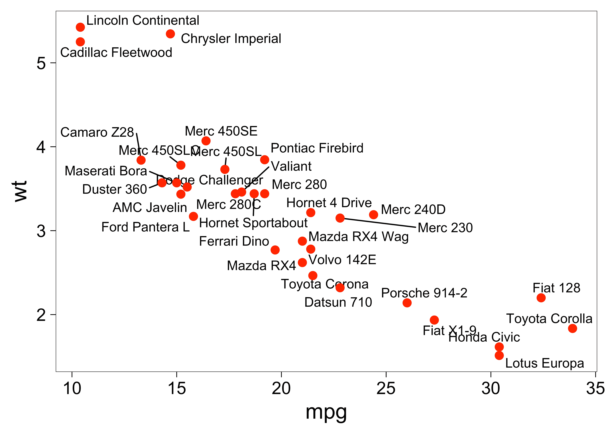
# Limit the x-axis to values <= 3
p + scale_x_continuous(limits = c(NA, 3))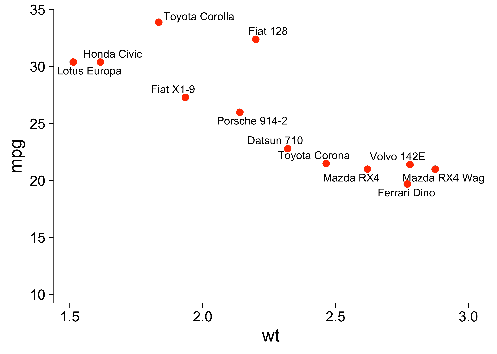
# Transform the y-axis with a pseudo log transformation
p + coord_trans(y = scales::pseudo_log_trans(base = 2, sigma = 0.1))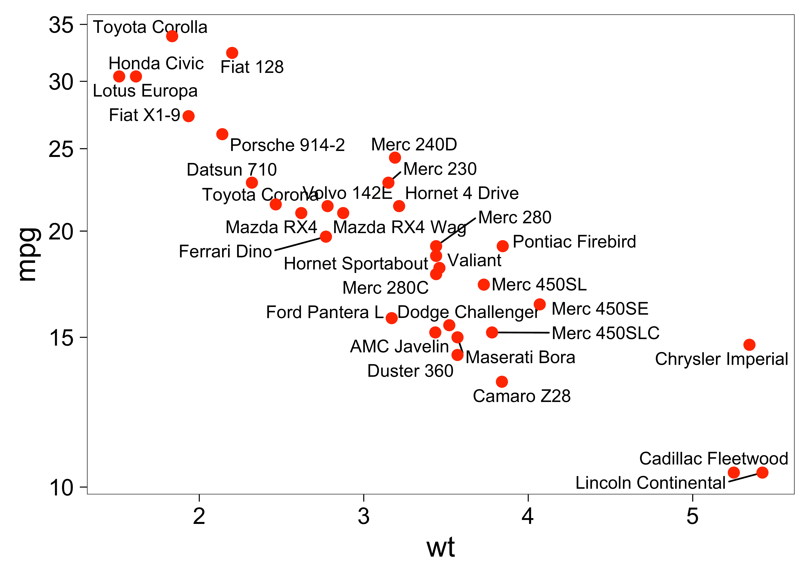
Unicode characters (Japanese)
library(ggrepel)
set.seed(42)
dat <- data.frame(
x = runif(32),
y = runif(32),
label = strsplit(
x = "原文篭毛與美篭母乳布久思毛與美夫君志持此岳尓菜採須兒家吉閑名思毛",
split = ""
)[[1]]
)
# Make sure to choose a font that is installed on your system.
my_font <- "HiraginoSans-W0"
ggplot(dat, aes(x, y, label = label)) +
geom_point(size = 2, color = "red") +
geom_text_repel(size = 8, family = my_font) +
ggtitle("テスト") +
theme_bw(base_size = 18, base_family = my_font)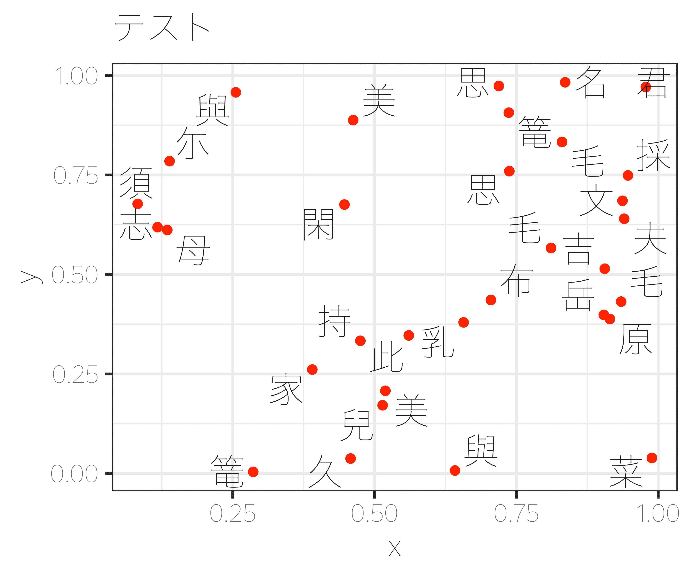
Mathematical expressions
d <- data.frame(
x = c(1, 2, 2, 1.75, 1.25),
y = c(1, 3, 1, 2.65, 1.25),
math = c(
NA,
"integral(f(x) * dx, a, b)",
NA,
"lim(f(x), x %->% 0)",
NA
)
)
ggplot(d, aes(x, y, label = math)) +
geom_point() +
geom_label_repel(
parse = TRUE, # Parse mathematical expressions.
size = 6,
box.padding = 2
)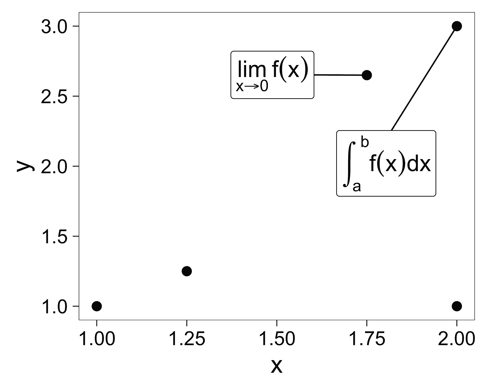
Animation
# This chunk of code will take a minute or two to run.
library(ggrepel)
library(animation)
plot_frame <- function(n) {
set.seed(42)
p <- ggplot(mtcars, aes(wt, mpg, label = rownames(mtcars))) +
geom_text_repel(
size = 5, force = 1, max.iter = n
) +
geom_point(color = "red") +
# theme_minimal(base_size = 16) +
labs(title = n)
print(p)
}
xs <- ceiling(1.18^(1:52))
# xs <- ceiling(1.4^(1:26))
xs <- c(xs, rep(xs[length(xs)], 15))
# plot(xs)
saveGIF(
lapply(xs, function(i) {
plot_frame(i)
}),
interval = 0.15,
ani.width = 800,
ani.heigth = 600,
movie.name = "animated.gif"
)
Source code
View the source code for this vignette on GitHub.
R Session Info
## R version 4.2.3 (2023-03-15)
## Platform: aarch64-apple-darwin20 (64-bit)
## Running under: macOS Ventura 13.4
##
## Matrix products: default
## BLAS: /Library/Frameworks/R.framework/Versions/4.2-arm64/Resources/lib/libRblas.0.dylib
## LAPACK: /Library/Frameworks/R.framework/Versions/4.2-arm64/Resources/lib/libRlapack.dylib
##
## locale:
## [1] en_US.UTF-8/en_US.UTF-8/en_US.UTF-8/C/en_US.UTF-8/en_US.UTF-8
##
## attached base packages:
## [1] stats graphics grDevices utils datasets methods base
##
## other attached packages:
## [1] sf_1.0-12 patchwork_1.2.0 ggpp_0.5.5 ggbeeswarm_0.7.2
## [5] ggrepel_0.9.6 ggplot2_3.5.1 gridExtra_2.3 knitr_1.47
##
## loaded via a namespace (and not attached):
## [1] beeswarm_0.4.0 tidyselect_1.2.1 xfun_0.44 bslib_0.7.0
## [5] purrr_1.0.2 colorspace_2.1-0 vctrs_0.6.5 generics_0.1.3
## [9] htmltools_0.5.8.1 yaml_2.3.8 utf8_1.2.4 rlang_1.1.3
## [13] e1071_1.7-13 pkgdown_2.0.7 jquerylib_0.1.4 pillar_1.9.0
## [17] glue_1.7.0 withr_3.0.0 DBI_1.2.3 lifecycle_1.0.4
## [21] munsell_0.5.0 gtable_0.3.4 ragg_1.2.5 codetools_0.2-19
## [25] memoise_2.0.1 evaluate_0.23 labeling_0.4.3 fastmap_1.2.0
## [29] vipor_0.4.5 class_7.3-21 fansi_1.0.6 highr_0.11
## [33] Rcpp_1.0.11 KernSmooth_2.23-20 polynom_1.4-1 scales_1.3.0.9000
## [37] classInt_0.4-9 cachem_1.1.0 desc_1.4.3 jsonlite_1.8.8
## [41] farver_2.1.1 systemfonts_1.0.4 fs_1.6.4 textshaping_0.3.6
## [45] digest_0.6.35 dplyr_1.1.4 grid_4.2.3 cli_3.6.2
## [49] tools_4.2.3 magrittr_2.0.3 sass_0.4.9 proxy_0.4-27
## [53] tibble_3.2.1 pkgconfig_2.0.3 MASS_7.3-58.2 timechange_0.2.0
## [57] lubridate_1.9.3 rmarkdown_2.27 R6_2.5.1 units_0.8-2
## [61] compiler_4.2.3